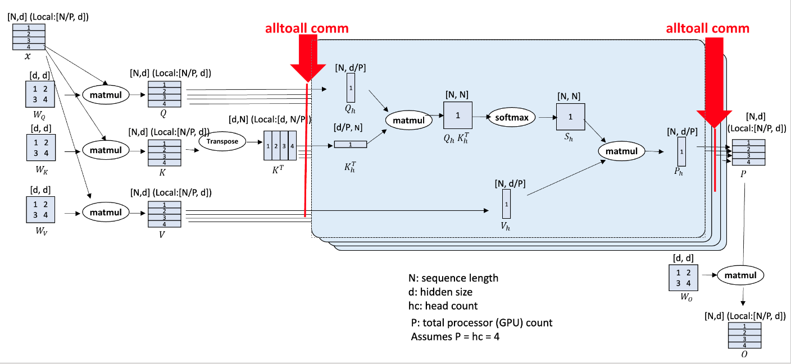

Minjia Zhang
(he/him/his)
Assistant Professor, Department of Computer Science
Affiliate Professor, Department of ECE
University of Illinois Urbana-Champaign
Address: Thomas M. Siebel Center for Computer Science 4106, 201 North Goodwin Avenue MC 258 Urbana, IL 61801
Email: minjiaz|at|illinois|dot|edu
Prospective PhD Students: I am actively looking for outstanding and highly-motivated students who are intersted in the following research directions:
- Efficient machine learning systems (training/inference on parallel/distributed/heterogeneous hardware)
- Effective efficiency algorithms (model compression, data efficiency, parameter-efficient tuning, etc.)
- Large-scale DL/AI applications (RAG, Image/Video Generation, VLM, DLRM, etc)
Master and Undergraduate Students: I am open to act as a thesis advisor for master students and internship advisor for undergraduate students. If this interests you, please send me your CV, along with the following details: your current year of study, your anticipated graduation date, and project interests if any.
About Me
I am an assistant professor (tenure-track) at the Grainger College of Engineering Computer Science of the University of Illinois Urbana-Champaign. I am affiliated with the Department of Electrical and Computer Engineering and NCSA at UIUC. I also hold a Visiting Researcher position with Microsoft. Prior to my appointment at UIUC, I had wonderful seven years at Microsoft Research Redmond and WebXT division as a Principal Researcher and technical lead. I have had all sorts of fun of developing highly efficient and cost-effective systems and algorithms, including but not limited to: enabling and accelerating large-scale deep learning training on parallel/distributed/heterogeneous hardware, building ultra-fast inference engine, different types of model compression, large-scale data management. My research works have been published in major venues, including system and high-performance computing conferences (e.g., ASPLOS, NSDI, USENIX ATC, SC), and top-tier machine learning conferences (e.g., ICML, NeurIPS, ICLR). Several of my work has been applied to Microsoft systems and products, such as Bing, Ads, Azure SQL, Windows, etc., leading to significant latency improvement and cost reduction.
At Microsoft, I was an early member of DeepSpeed, an open-source deep learning optimization library that makes training and inference DL models easy, efficient, and effective. DeepSpeed has enabled the training of some of the largest language models in the world, such as Megatron-Turing 530B. It has been widely adopted by both the industry and academia and has become a common backend for various popular DL frameworks such as HuggingFace, PyTorch Lightning, Fairscale, etc. I was also the co-chair of the engineering/scaling group of the BigScience project, contributing to the training of the BLOOM 176B model, which was the world's largest open multilingual language model. Before DeepSpeed, I drove the DeepCPU project at Microsoft, a DL inference optimization library that brought order-of-magnitude latency and cost reduction to mission-critical production DL models. Before joining Microsoft, I finished my Ph.D. from the Computer Science Department at Ohio State University in May 2016, where I was a member of the PLaSS group working on building efficient and scalable systems with strong semantics for parallel programs and advised by Prof. Michael D. Bond. Along the way, I spent the summer/fall of 2015, the summer of 2016 at Microsoft Research Redmond, working with Kathryn McKinley, Sameh Elnikety, and Yuxiong He. I have been serving as area chair of NeurIPS, program committee member for ASPLOS, USENIX ATC, MLSys, IPDPS, AAAI, and reviewers for ICLR, ICML, CVPR, ICCV, ECCV, ECAI, VLDB, etc. I have received several awards including the Distinguished Paper Award and Distinguished Artifact Award in OOPSLA 2015, Microsoft Excellence Awards, and the Honorable Mention of the ICLR 2024 Outstanding Paper Award.-
Recent News
- [7/5/2024] Our paper "Large Language Models as Configuration Validators" has been accepted at ICSE 2025. Congratulations to Xinyu, Yinfang, and Tianyin!
- [7/3/2024] Will serve as the program committee for the 1st Unlearning and Model Editing (U&Me'24) workshop at ECCV 2024.
- [7/1/2024] Universal Checkpointing has been released in DeepSpeed! [中文] [日本語]
- [6/30/2024] Will be serving as a TPC member of MLSys 2025.
- [6/21/2024] Gave a talk on "Towards Efficient System and Algorithm for Large-Scale Scientific Discovery" at the European Trillion Parameter Consortium (TPC) Kickoff workshop in Barcelona.
- [6/10/2024] Will be serving as Program Committee for AAAI 2025.
- [5/7/2024] The "Model Tells You What to Discard" paper received the honorable mention of the ICLR 2024 Outstanding Paper Awards.
- [5/5/2024] Our work on enabling training of massive sequence transformer models has been accepted at the 43rd ACM Symposium on Principles of Distributed Computing (PODC 2024)!
- [4/29/2024] I am invited to give a talk on large-scale training at the European Trillion Parameter Consortium (TPC) Kickoff workshop in Barcelona in June.
- [4/5/2024] Our tutorial of "Mixture-of-Experts in the Era of LLMs: A New Odyssey" has been accepted by ICML 2024!
- [3/27/2024] Will be serving as the area chair for NeurIPS 2024.
- [3/10/2024] Our work on serving vector database with serverless functions has been accepted at SIGMOD 2024!
- [2/29/2024] OpenFold has been accepted in principle at Nature Methods!
- [2/13/2024] Will be serving as the reviewer of the first Conference on Language Modeling (CoLM).
- [2/2/2024] Will be serving in the Review Board for PVLDB from April 2024 through March 2025.
- [1/17/2024] Will be serving as a reviewer for ECCV 2024.
- [1/16/2024] Our paper on enabling profiling-based adaptive KV cache optimization for LLM inference has been accepted as at ICLR 2024 for oral presentation! The acceptance rate for oral this year is 1.2%.
- [12/27/2023] Will be serving as a PC for USENIX ATC 2024.
- [12/16/2023] I will be serving as a penalist at the 3rd Efficient Natural Language and Speech Processing (ENLSP) workshop at NeurIPS 2023, New Orleans. Thank you Yu, Yue, Medhi, and Soheila for the invitation!
- [12/9/2023] Our paper on enabling efficient DNN training via data efficient optimizations has been accepted at AAAI 2024!
- [12/7/2023] Our paper on enabling efficient DNN training on preemptible instances has been accepted at NSDI 2024! Congrats everyone!
- [12/27/2023] Will be serving as a reviewer for ICML 2024.
- [10/30/2023] Will be serving as a reviewer for CVPR 2024.
- [9/8/2023] Will be serving as a reviewer for MLSys 2024.
- [8/24/2023] Will be serving as a reviewer for ICLR 2024.
- [8/15/2023] Our paper on cost-effective on-device continual learning has been accepted at MobiCom 2023!
- [7/15/2023] Our paper on adversarial fine-tuning efficiency optimizations has been accepted at ECAI 2023!
- [1/21/2023] Our paper on compressed communication for large-scale training 0/1 Adam has been accepted at ICLR 2023!
- [11/7/2022] Our paper on fast and accurate vector search via intra-query parallelism has been accepted at PPoPP 2023!
- [9/20/2022] Our paper on large-scale GNN training on a single-node machine has been accepted at ASPLOS 2023!
- [9/14/2022] Three papers have been accepted at NeurIPS 2022! 2665 out of 10411 submissions are accepted.
- [7/8/2022] Our paper on large-scale DNN training on spot instances has been accepted at NSDI 2023! 50 out of 272 submissions are accepted.
- [6/13/2022] Our paper on large-scale inference for Transformer models has been accepted at SC 2022! 81 out of 320 submissions are accepted.
- [5/18/2023] Will be serving as a reviewer for ECAI 2023.
- [05/5/2022] Our paper on advancing the next generation of AI via Mixture-of-Experts has been accepted at ICML 2022! 1117 out of 5630 submissions are accepted.
- [3/21/2023] Will be serving as a PC for ASPLOS 2024.
- [2/24/2022] Our paper on continual learning has been accepted at DAC 2022!
- [2/6/2023] Will be serving as a reviewer for ICCV 2023.
- [12/1/2021] Our paper on adversarial data augmentation for knowledge distillation has been accepted at AAAI 2022! 1349 out of 9251 submissions are accepted.
- [10/11/2021] Our paper on graph sampling and pruning for nearest neighbor search has been accepted at WSDM 2022! 159 out of 786 submissions are accepted.
- [9/28/2021] Our paper on semi-structured sparsity for compressing Transformer networks has been accepted at NeurIPS 2021.
Research Interests and Selected Publications
|  |
PODC 2024 |
|
Model Tells You What to Discard: Adaptive KV Cache Compression for LLMs
ICLR 2024 (Oral, Honorable Mention of the Outstanding Paper Awards) |
|
Advancing Mixture-of-Experts Inference and Training to Power Next-Generation AI Scale
ICML 2022 |
|
Extreme Compression for Pre-trained Transformers Made Simple and Efficient
NeurIPS 2022 (Oral) |
|
ZeRO-Offload: Democratizing Billion-Scale Model Training
USENIX ATC 2021 |
AI Training at Scale and Speed: Breaking the Memory Wall and Beyond
 |
Universal Checkpointing: Efficient and Flexible Checkpointing for Large Scale Distributed Training
Preprint [Project Page] |
|
PODC 2024 |
|
Parcae: Proactive, Liveput-Optimized DNN Training on Preemptible Instances
NSDI 2024 |
|
AAAI 2024 |
 |
ECAI 2023 |
|
Maximizing Communication Efficiency for Large-scale Training via 0/1 Adam
ICLR 2023 |
|
Betty: Enabling Large-Scale GNN Training with Batch-Level Graph Partitioning
ASPLOS 2023 |
|
Bamboo: Making Preemptible Instances Resilient for Affordable Training of Large DNNs
NSDI 2023 |
|
Advancing Mixture-of-Experts Inference and Training to Power Next-Generation AI Scale
ICML 2022 |
|
BLOOM: A 176B-Parameter Open-Access Multilingual Language Model
ACL 2022 BigScience Workshop |
|
The Stability-Efficiency Dilemma: Investigating Sequence Length Warmup for Training GPT Models
NeurIPS 2022 (Spotlight) |
|
ZeRO-Offload: Democratizing Billion-Scale Model Training
USENIX ATC 2021 |
|
Efficient Tensor Migration and Allocation on Heterogeneous Memory Systems for Deep Learning
HPCA 2021 |
|
Accelerating Training of Transformer-Based Language Models with Progressive Layer Dropping
NeurIPS 2020 |
Ultra-Fast Inference: Meet the Need for Speed in Production
 |
DeepSpeed-Inference: Enabling Efficient Inference of Transformer Models at Unprecedented Scale
SC 2022 |
|
A Survey of Multi-Tenant Deep Learning Inference on GPU
MLSys Workshop 2022 |
|
SHARP: An Adaptable, Energy-Efficient Accelerator for Recurrent Neural Network
TECS 2022 |
|
DynaTune: Dynamic Tensor Program Optimization in Deep Neural Network Compilation
ICLR 2021 |
|
DUET: Compiler-Aware Subgraph Scheduling for Tensor Programs on a Coupled CPU-GPU Architecture
IPDPS 2021 |
|
AdaTune: Adaptive Tensor Program Compilation Made Efficient
NeurIPS 2020 |
|
Accelerating Large Scale Deep Learning Inference through DeepCPU at Microsoft
USENIX OpML 2019 |
|
DeepCPU: Serving RNN-based Deep Learning Models 10x Faster
USENIX ATC 2018 |
Model Compression: Smaller, Faster, and Cheaper DNN
|
Model Tells You Where to Merge: Adaptive KV Cache Merging for LLMs on Long-Context Tasks
Preprint |
|
Model Tells You What to Discard: Adaptive KV Cache Compression for LLMs
ICLR 2024 (Oral, Honorable Mention of the Outstanding Paper Awards) |
|
Extreme Compression for Pre-trained Transformers Made Simple and Efficient
NeurIPS 2022 (Oral) |
|
ZeroQuant: Efficient and Affordable Post-Training Quantization for Large-Scale Transformers
NeurIPS 2022 (Spotlight) |
|
Adversarial Data Augmentation for Task-Specific Knowledge Distillation of Pre-Trained Transformers
AAAI 2022 |
|
NxMTransformer: Semi-Structured Sparsification for Natural Language Understanding via ADMM
NeurIPS 2021 |
|
Navigating with Graph Representations for Fast and Scalable Decoding of Neural Language Models
NeurIPS 2018 |
|
Learning Intrinsic Sparse Structures within Long Short-Term Memory
ICLR 2018 |
AI4Science: Towards Efficiently Intelligent AI for Scientific Discovery
Generative AI and its Applications: LLM Alignment, Vision-Language Model, Diffusion Model
 |
DeepSpeed-Chat: Easy, Fast and Affordable RLHF Training of ChatGPT-like Models at All Scales
Preprint |
|
DeepSpeed-VisualChat: Multi-Round Multi-Image Interleave Chat via Multi-Modal Causal Attention
Preprint |
 |
UltraEdit: Instruction-based Fine-Grained Image Editing at Scale
Preprint [Project Page (w. Demo)] |
|
RenAIssance: A Survey into AI Text-to-Image Generation in the Era of Large Model
Preprint |
|
Large Language Models as Configuration Validators
ICSE 2025 |
High-Performance Vector Database Systems Built for Scale
|
Vexless: A Serverless Vector Data Management System Using Cloud Functions
SIGMOD 2024 |
|
PPoPP 2023 |
|
GraSP: Optimizing Graph-based Nearest Neighbor Search with Subgraph Sampling and Pruning
WSDM 2022 |
|
HM-ANN: Efficient Billion-Point Nearest Neighbor Search on Heterogeneous Memory
NeurIPS 2020 |
|
Improving Approximate Nearest Neighbor Search through Learned Adaptive Early Termination
SIGMOD 2020 |
|
CIKM 2019 |
Bringing AI to Edge: Running Powerful AI Programs on Resource-Constrainted Mobile/Edge Devices
Parallel Computing and Scalable Runtime
- TOPC 2017 "Hybridizing and Relaxing Dependence Tracking for Efficient Parallel Runtime Support", Man Cao, Minjia Zhang, Aritra Sengupta, Swarnendu Biswas, and Michael D. Bond, In ACM Transactions on Parallel Computing.
- ISMM 2017 "Avoiding Consistency Exceptions Under Strong Memory Consistency Models", Minjia Zhang, Swarnendu Biswas, Michael D. Bond, in the 2017 ACM SIGPLAN International Symposium on Memory Management.
- CC 2017 "Lightweight Data Race Detection for Production Runs", Swarnendu Biswas, Man Cao, Minjia Zhang, Michael D. Bond, and Benjamin P. Wood, in the 26th International Conference on Compiler Construction.
- PPoPP 2017 "On the Problem of Consistency Exceptions in the Context of Strong Memory Models", Minjia Zhang, Swarnendu Biswas, Michael D. Bond, in the 22th ACM SIGPLAN Symposium on Principles and Practice of Parallel Programming.
- CC 2016 "Relaxed Dependence Tracking for Parallel Runtime Support", Minjia Zhang, Swarnendu Biswas, Michael D. Bond, in the 25th International Conference on Compiler Construction.
- PPoPP 2016 "Drinking from Both Glasses: Combining Pessimistic and Optimistic Tracking of Cross-Thread Dependences", Man Cao, Minjia Zhang, Aritra Sengupta, and Michael Bond, in the 21th ACM SIGPLAN Symposium on Principles and Practice of Parallel Programming.
- OOPSLA 2015 "Valor: Efficient, Software-Only Region Conflict Exceptions"(Distinguished Artifact Award, Distinguished Paper Award), Swarnendu Biswas, Minjia Zhang, Michael D. Bond, and Brandon Lucia, in the 2015 ACM SIGPLAN International Conference on Object-Oriented Programming, Systems, Languages, and Applications.
- PPoPP 2015 "Low-Overhead Software Transactional Memory with Progress Guarantees and Strong Semantics", Minjia Zhang, Jipeng Huang, Man Cao, and Michael D. Bond, in the 20th ACM SIGPLAN Symposium on Principles and Practice of Parallel Programming.
- ASPLOS 2015 "Hybrid Static-Dynamic Analysis for Statically Bounded Region Serializability", Aritra Sengupta, Swarnendu Biswas, Minjia Zhang, Michael D. Bond, and Milind Kulkarni, in the 20th International Conference on Architectural Support for Programming Languages and Operating Systems.
- SPLASH 2015 Companion "SIRe: An Efficient Snapshot Isolation based Memory Model for Detecting and Tolerating Region Conflicts", Minjia Zhang, in 2015 ACM SIGPLAN International Conference on Systems, Programming, Languages and Applications: Software for Humanity.
- WoDet 2014 "Drinking from Both Glasses: Adaptively Combining Pessimistic and Optimistic Synchronization for Efficient Parallel Runtime Support", Man Cao, Minjia Zhang, and Michael D. Bond, in the 5th Workshop on Determinism and Correctness in Parallel Programming.
- OOPSLA 2013 "Octet: Capturing and Controlling Cross-Thread Dependences Efficiently", Michael D. Bond, Milind Kulkarni, Man Cao, Minjia Zhang, Meisam Fathi Salmi, Swarnendu Biswas, Aritra Sengupta, and Jipeng Huang, in the 2013 ACM SIGPLAN Conference on Object-Oriented Programming, Systems, Languages, and Applications.
- ICPP 2011 "Memcached Design on High Performance RDMA Capable Interconnects", J. Jose, H. Subramoni, M. Luo, M. Zhang, J. Huang, M. W. Rahman, N. S. Islam, X. Ouyang, S. Sur and D. K. Panda, in the 40th International Conference on Parallel Processing.
- ICPADS 2010 "VirtCFT: A Transparent VM-level Fault-Tolerant System for Virtual Clusters", Minjia Zhang,Hai Jin,Song Wu,Xuanhua Shi, in IEEE 16th International Conference on Parallel and Distributed Systems.
Patents
- Minjia Zhang, Yuxiong He, "Multi-Layer Semantic Search", U.S. Patent, MS# 406007-US-NP, 2019
- Minjia Zhang, Xiaodong Liu, Wenhan Wang, Jianfeng Gao, Yuxiong He, “Graph Representations for Identifying a Next Word”, US 2019 / 0377792 A1
- Minjia Zhang, Samyam Rajbhandari, Wenhan Wang, Yuxiong He, “Deep Learning Model Scheduling”, US 2019 / 0311245 A1
- Invited talk on "Towards Efficient System and Algorithm for Large-Scale Scientific Discovery" at the European Trillion Parameter Consortium (TPC) Kickoff workshop in Barcelona in June 2024
- Invited panel speaker at the Efficient Natural Language and Speech Processing (ENLSP-III) workshop at NeurIPS 2023
- Presented work on "Efficient System and Algorithm Design for Deep Learning Training and Inference", University of Illinois at Urbana-Champaign, Purdue University, University of Virginia, Univeresity of Minnesota, Indiana University Bloomington, Colorado School of Mines, Stevens Institute of Technology
- Presented work on "XTC: Extreme model compression made simple and efficient" at NeurIPS 2022
- Invited talk on "Extreme Compression for Pre-trained Transformers Made Simple and Efficient" at Intel AI Group, July 28th 2022
- Invited talk by Zhihao Jia on "DeepSpeed: The library to accelerate training and inference of DNN at scale" at CMU, April 18th 2022
- Invited talk on "DeepSpeed: The library to accelerate training and inference of DNN at scale" at the Efficient Large-Scale AI Workshop as a part of MSR Project Green
- Invited talk by Myeongjae Jeon on "DeepSpeed: The library to accelerate training and inference of DNN at scale" at UNIST, April 13th 2022
- Invited lecture on "New algorithms for Approximate Nearest Neighbor Search Systems at Scale" at Kent State University, October 20, 2022
- Presented work on graph sampling and pruning for nearest neighbor search at WSDM 2022
- Invited talk on "DL Inference and Training Optimization Towards Speed and Scale" at Tsinghua AIR 2021
- Invited keynote speech on "DL Inference and Training Optimization Towards Speed and Scale" at EMDC 2021
- Presented work on DL inference through heterogeneous devices at IPDPS 2021
- Presented work on "DynaTune: Dynamic Tensor Program Optimization in Deep Neural Network Compilation" at ICLR 2021
- Invited keynote speech on "DL Inference and Training Optimization Towards Speed and Scale" at EMDC 2021
- Presented work on "Accelerating Training of Transformer-Based Language Models with Progressive Layer Dropping" at NeurIPS 2020
- Presented work on "AdaTune: Adaptive Tensor Program Compilation Made Efficient" at NeurIPS 2020
- Invited talk on "TVM@Microsoft" at the TVM and Deep Learning Compilation Conference 2019, Seattle, Washington, US
- Presented work on "GRIP: Multi-Store Capacity-Optimized High-Performance Nearest Neighbor Search for Vector Search Engine" at CIKM 2019, Beijing, China
- Presented work on "Accelerating Large Scale Deep Learning Inference through DeepCPU at Microsoft" at 2019 USENIX OpML, May 2019, Santa Clara, CA, USA
- Presented work on "DeepCPU: Serving RNN-based Deep Learning Models 10x Faster" at 2018 USENIX Annual Technical Conference, July 2018, Boston, MA, USA
- Invited talk on "DeepCPU: Deep Learning Serving Optimizations on CPUs" at the Deep Learning workshop at Microsoft TechFest 2018, March 2018, Redmond, WA, USA
- Invited talk on "DeepCPU: Deep Learning Serving Optimizations on CPUs" at Microsoft Research Talk Series, February 2018, Redmond, WA, USA
- Presented work on "DeepCPU: Deep Learning Serving Optimizations on CPUs" at Machine Learning, AI & Data Science Conference (MLADS) December 2017, Redmond, WA, USA
- Presented work on detecting and tolerating region conflicts to support region snapshot isolation at ACM Student Research Competition, OOPSLA 2015, Pittsburg, PA, USA
- Presented work on low-overhead and scalable software transactional memory with strong progress guarantees at the 20st ACM SIGPLAN Symposium on Principles and Practice of Parallel Programming, PPoPP 2015, San Francisco, CA, USA
Talks
Professional Service and Membership
- ACM member
- IEEE member
- Organizer: PLDI 2019 Publicity Co-Chair
- Area/Session Chair: NeurIPS 2024 Area Chair, ASPLOS 2019 Machine Learning Track Session Chair
- Program Committee: AAAI 2025, USENIX ATC 2024, MLSys 2024, ASPLOS 2023, ICDE 2023 Industry and Applications Track, MLSys 2023, IPDPS 2023, IPDPS 2021, IPDPS 2020, IPDPS 2019, IPDPS 2018, ASPLOS 2018 Shadow PC, PLDI 2017 Artifact Evaluation, SPLASH 2015 Artifact Evaluation, PLDI 2015 Artifact Evaluation
- Conference Reviewer: VLDB 2024, ECCV 2024, ICML 2024, ICLR 2024, CVPR 2024, AAAI 2024, ICLR 2023, AAAI 2023, CVPR 2023, ICCV 2023, ECAI 2023, ICLR 2022, AAAI 2022, CVPR 2022, USENIX ATC 2022, ICML 2022, ECCV 2022, NeurIPS 2022, ASPLOS 2021, AAAI 2021, ICLR 2021, CVPR 2021, ICCV 2021, ICML 2021, NeurIPS 2021, NeurIPS 2020, ICLR 2020, NeurIPS 2019, NeurIPS 2019 Reproducibility Challenge, PLDI 2019, ASPLOS 2019, Middleware 2018 subreviewer, ICAC 2018 subreviewer, IEEE Cloud 2018 subreviewer, HiPC 2017 subreviewer, ICAC 2017 subreviewer, WTTM 2015 subreviewer.
- Journal Reviewer: Transactions on Machine Learning Research (2022-2023), Journal of Systems and Software (2020), IEEE Transaction on Cloud Computing (2019-2020), ACM Transaction on Privacy and Security (2019), Journal of Computer Science (2017-2018), Concurrency and Computation: Practice and Experience (2016-2017)
Past and Current Collaborators